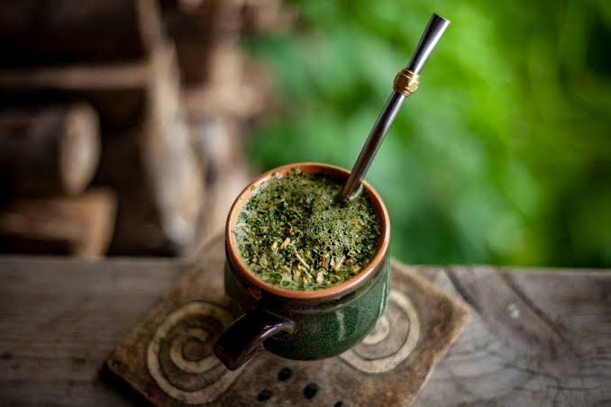
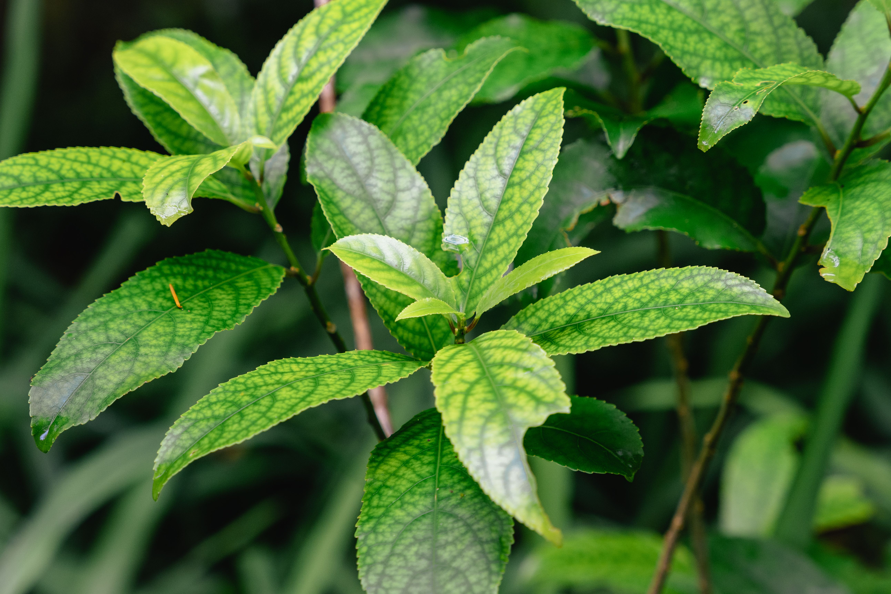
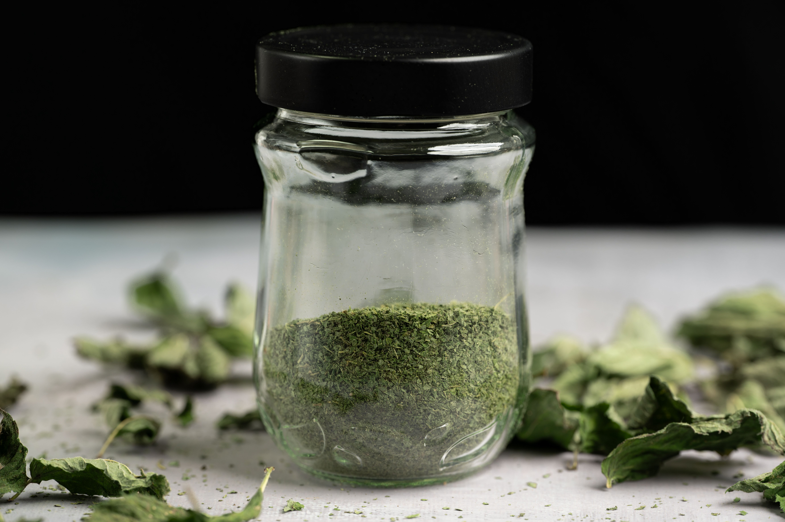

SEJA BEM VINDO(A)
O saite vai te falar melhor sobre a importancia da erva mate no paraná

importancia da Ilex paraguariensis para economia do Paraná
por que a arvore Ilex paraguariensis e tão importancia para os povos indágenas e para nos

A importancia da erva mate no Paraná
A sua importancia cultural no Paraná

Curiosidades
Curiosidades 1
Uma curiosidade sobre a erva-mate: ele contém cafeína, além de outros compostos estimulantes, por isso o chimarrão e o tereré podem ajudar a aumentar a sensação de disposição e atenção. 🧉 E tem mais: quanto mais fino for o pó da erva-mate, mais ele pode passar pela bomba do chimarrão e chegar à boca — por isso a granulometria da erva faz diferença na hora de preparar a bebida.
Curiosidades 2
Uma curiosidade sobre a planta da erva-mate: ela pode viver por décadas e é uma árvore nativa da América do Sul. Suas folhas são usadas para preparar bebidas como **chimarrão, tereré e mate**. 🧉 Outra curiosidade legal é que a erva-mate prefere lugares úmidos e com sombra, especialmente quando é jovem.